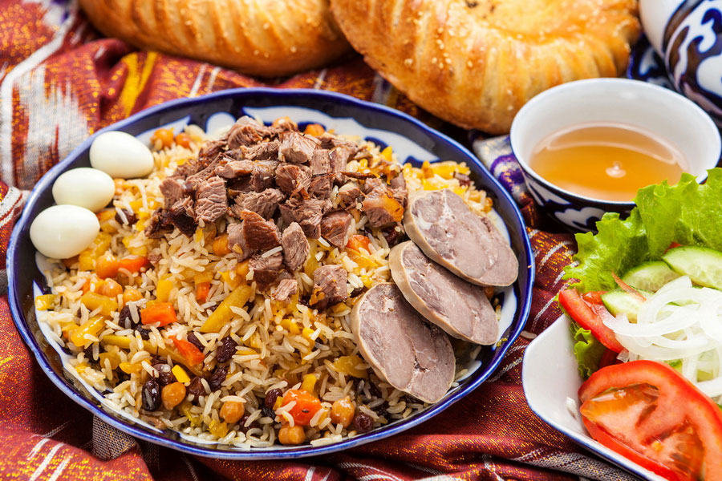

Рецепт узбекского плова

Ингредиенты:
- 1 кг баранины или говядины
- 1 кг моркови
- 1 кг лука
- 1 кг риса (лучше девзира)
- 200 мл растительного масла
- 1 головка чеснока
- 1 ст. л. соли
- 1 ст. л. зиры
- 1 ч. л. куркумы
- 1 ч. л. барбариса
- 2 л воды
Приготовление:
- Нарежьте мясо крупными кусками.
- Лук нарежьте полукольцами, морковь — соломкой.
- Разогрейте масло в казане и обжарьте лук до золотистого цвета.
- Добавьте мясо, обжаривайте до румяной корочки.
- Добавьте морковь, перемешайте и тушите 10 минут.
- Влейте воду, добавьте специи и чеснок, доведите до кипения.
- Промойте рис и выложите его сверху, не перемешивая.
- Добавьте воду так, чтобы она покрывала рис на 1 см.
- Готовьте на среднем огне, пока вода не впитается.
- Уменьшите огонь, накройте крышкой и томите 20 минут.
- Снимите с огня, аккуратно перемешайте и дайте настояться 10 минут.
Приятного аппетита!
Назад